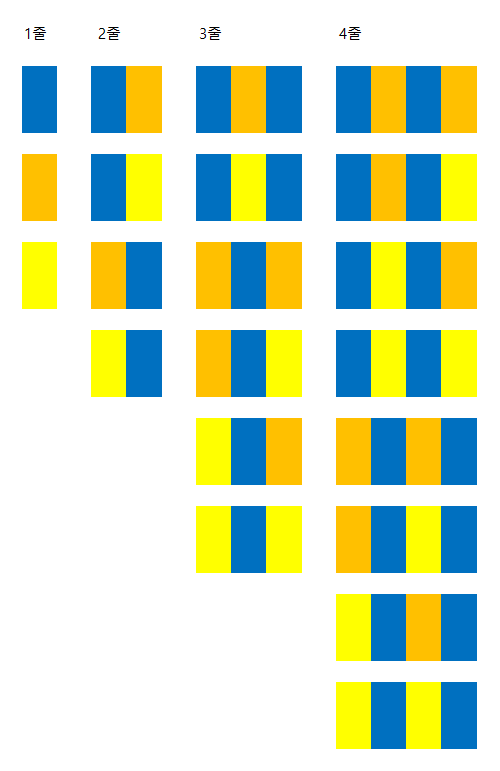
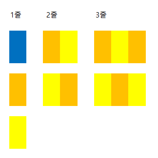

Problem
주어진 색으로 칠해진 세로줄을 가진 깃발을 설계해야 한다. 같은 색을 가진 줄들은 서로 인접할 수 없으며, 인접하면 안되는 색의 번호가 오름차순 forbidden 배열로 주어진다. 줄을 가장 적게 사용해 깃발을 만드는 방법을 구하라.
Constraints
- numFlags는 long형 크기를 가지며 1이상 10^17이하이다.
- forbidden은 2이상 10이하 크기다.
- forbidden 요소는 1에서 50이하 문자이며 '0'-'9' 숫자와 (' ') 공백으로 이루어진다.
- forbidden 요소는 오름차순에 금지된 색의 색인을 가진다. 색인은 0이상 색의 개수 이하다.
- forbidden 요소는 자신의 색인을 포함하고 대칭 관계(symmetrical relationship)를 포함한다.
- 모든 색의 쌍이 fobidden에서 금지되는 경우는 없다.
Code
#include <sstream>
#include <string>
#include <vector>
using namespace std;
bool adj[10][10];
long long stripe_num[201][10], total[10];
class Flags {
public:
long long numStripes(string numFlags, vector<string> forbidden) {
long long nf = atoll(numFlags.c_str());
int n = forbidden.size();
for (int i = 0; i < forbidden.size(); ++i) {
istringstream fIdx (forbidden[i]);
for (int j; fIdx >> j; )
adj[i][j] = adj[j][i] = true;
}
for (int i = 0; i < n; ++i)
total[1] += stripe_num[1][i] = 1;
nf -= total[1];
if (nf <= 0) return 1;
for (int i = 2; ; ++i) {
for (int j = 0; j < n; ++j) {
for (int k = 0; k < n; ++k)
if (!adj[j][k]) stripe_num[i][j] += stripe_num[i-1][k];
total[i] += stripe_num[i][j];
}
nf -= total[i];
if (nf <= 0) return i;
if (total[i-1] == total[i]) return i + nf/total[i];
}
}
};
Explanation
인접하지 말아야 할 색인이 있는 forbidden 배열을 가지고 adj 인접 행렬을 만든다. nf는 만들어야 하는 깃발의 개수다. 세 번째 for문의 i는 현재 줄의 개수를 의미한다.
한 줄만 가진 깃발은 모든 색이 가능하므로 모든 색의 개수를 total[1]에 더하고 nf에 이를 빼준다. 두 줄부터 색이 서로 겹치면 안되므로 adj를 사용해 확인 후 개수를 total[2]에 더하고 nf에 이를 빼준다. 이런 식으로 더해나가면서 답을 구하면 된다. nf가 음수가 되면 현재 색의 개수까지 사용해 깃발을 만들 수 있으므로 i를 반환한다. total[i-1]과 total[i]가 같으면 매 반복시 인접해도 되는 색의 개수가 동일하다는 뜻이므로 (i + nf/total[i])을 반환한다. 앞의 두 경우를 만족하지 못하면, 현재 색의 개수로 깃발을 만들 수 없고 다음 반복을 진행한다.
예1: numFlag 10, forbidden {"0", "1 2", "1 2"}// 0: 파랑, 1: 주황, 2: 노랑

2줄부터 깃발이 2개씩 늘어가므로 nf가 0과 같거나 작을 때까지 i를 증가시킨다:
if (nf <= 0) return i;
예2: numFlag 10, forbidden {"0 1 2", "0 1", "0 2"}

파랑은 주황, 노랑과 인접할 수 없으므로 깃발에 2줄을 그릴 때 사용하지 못한다. 2줄부터 깃발의 끝 부분이 (주황,노랑), (노랑 주황)으로 끝나는 양식을 보이므로 다음 조건문에 해당한다:
if (total[i-1] == total[i]) return i + nf/total[i];
이는 깃발의 줄이 계속 늘어가도 동일한 개수의 깃발이 나온다는 것을 뜻한다. 현재 줄 수 i에 (남은 깃발 수 nf를 현재 깃발 수 total[i]로 나눈 값)을 더하면 최종적으로 구하려는 줄 수가 나오게 된다.